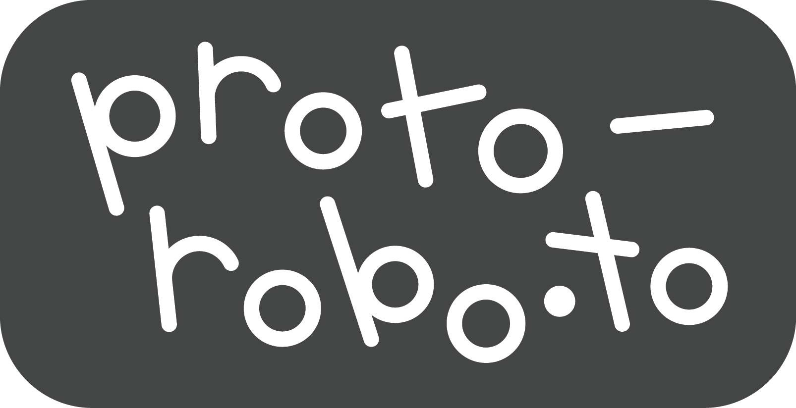
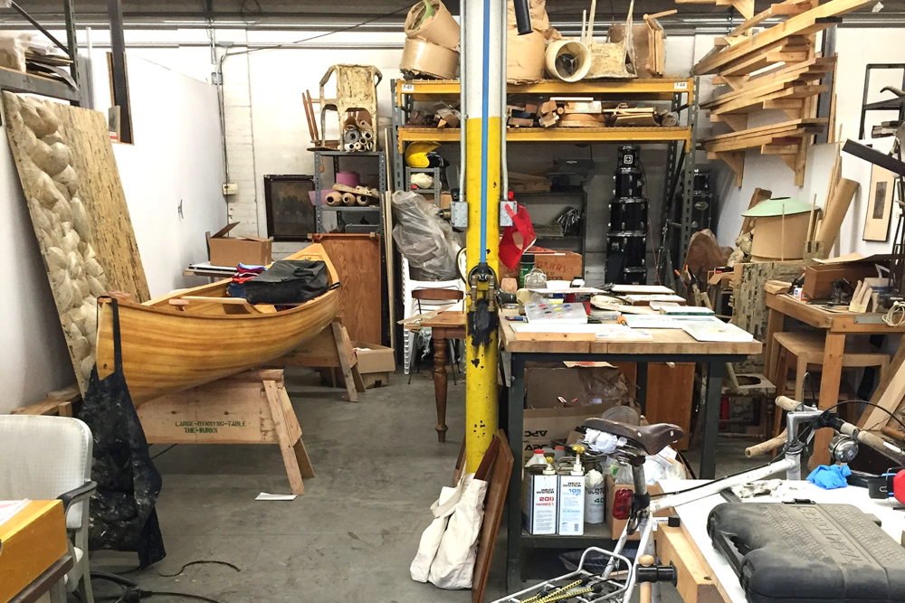

cnc fabrication + prototyping
------------------------------------------------------------------------------------------------------------------------------------------------------------------------------------------------------------------------------------------------------------------------------------------------------------
------------------------------------------------------------------------------------------------------------------------------------------------------------------------------------------------------------------------------------------------------------------------------------------------------------
- ABOUT PROTO ROBOTO!
- welcome to proto roboto!
- we are a Providence RI based cnc-routing shop, and are a member of the Wurks artist collaborative 
- we offer custom fabrication and prototyping services for artists, makers, small businesses, creatives, inventors, students, and educators.
- we use precision computer-numerically-controlled (cnc) routers to cut, mill, engrave, and carve.
- we can cut most hardwoods, softwoods, plywoods, plastics, brass and aluminum.
- we can also route 4'x8' plywood boards.
- we can make signs, jigs, fixtures, molds, components for furniture, and architectural projects.
------------------------------------------------------------------------------------------------------------------------------------------------------------------------------------------------------------------------------------------------------------------------------------------------------------